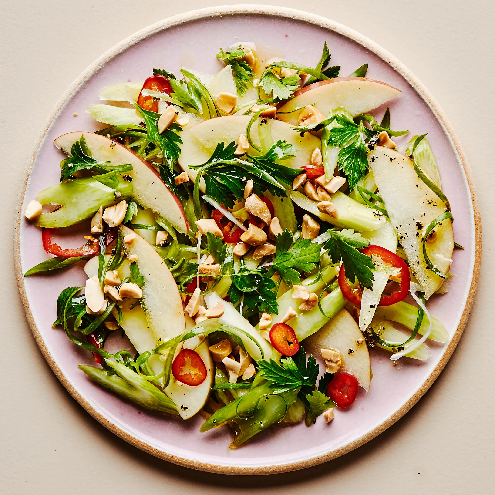

Celery Apple Salad

Description
Celery Apple salad is a refreshing dish that packs loads of flavor. Beyond the two
ingredients in the title it also contains a nice punch of acidity and healthy dose
of umami flavor. Once you have mastered this recipe I recommend tweaking the type of
acid that you add to the dish as well as the umami flavoring agent, in this case that
agent happens to be mustard and garlic.
Ingredients
-
1/2 stalk of celery
-
2 apples
-
Half a red onion
-
A tablespoon of dijion mustard
-
2 cloves of garlic
-
1/2 teaspoon of salt
-
A few cranks of fresh ground black pepper
-
2 tablespoons of rice vingar
Steps
- Cube the celery and apples into simmilar sizes
- Dice the onion and garlic finely
- mix the garlic, onions, mustard and vinegar
- add the previous mix to the cubed celery and apples
- Enjoy!